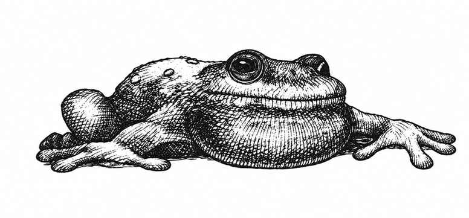

巨蛙 · Frog, Giant
 |
|
巨蛙栖息于沼泽、湿地、大池塘、河岸与湖畔。最小的身体长约 2 尺，2 颗生命骰的中型巨蛙长约 4 尺，最大的长约 6 尺。它们善于伪装，遭遇骰为 1–4 时会突袭对手；还能跃起至多 18 尺攻击。巨蛙的舌头长约为体长的三倍，以 +4 命中，但本身不造成伤害，而是把猎物卷入口中。被舌头击中的生物可以攻击舌头；若击中，巨蛙会缩回舌头，此后不再用它攻击该生物。若目标没有击中舌头，它会在下一轮被拖到蛙口，并自动受到最大伤害。
体重超过巨蛙的生物有第二次攻击舌头的机会，并且要到第三个近战轮才会被拖至蛙口；体重超过巨蛙两倍的生物完全不会被拖动，巨蛙会在第三个近战轮松口。
巨蛙体重约 50–250 磅；身体每超过 2 尺一尺，体重约增加 50 磅。体重每超过 50 磅，最大跳跃距离便减少 2 寸（基础最大值为 18 寸）。无论体重多少，巨蛙最多能跳高 30 尺；起跳方向还可偏离正前方最多 45 度。
巨蛙吃大型昆虫、鸟、鼠，以及任何能吞下的小动物。它们能吞下小型人类、精灵、半身人等；伤害骰掷出 20 表示吞噬成功。被整只吞下的生物若有锋利武器，可在命中护甲等级 8 或更高时切开巨蛙逃出；最多有三次机会，但这样也会杀死巨蛙。巨蛙体内有完整猎物时，外部攻击有三分之一概率同时击中猎物，造成相同伤害。巨蛙会主动捕猎，却害怕巨鱼、巨龟、巨蛇等掠食者；重伤时会撤退，也害怕火。
杀人蛙 Killer Frog。 这种较小的巨蛙以利爪与牙齿攻击，是专门培育、会吃人的变异品种。它们有同类相食的习性，因此没有泛滥成真正威胁。
毒蛙 Poisonous Frog。 这是普通巨蛙的稀有变种，皮肤会分泌毒素，触碰或被其咬伤都可能致命。不过毒性较弱，所有生物对毒素的豁免检定均获得 +4 加值。